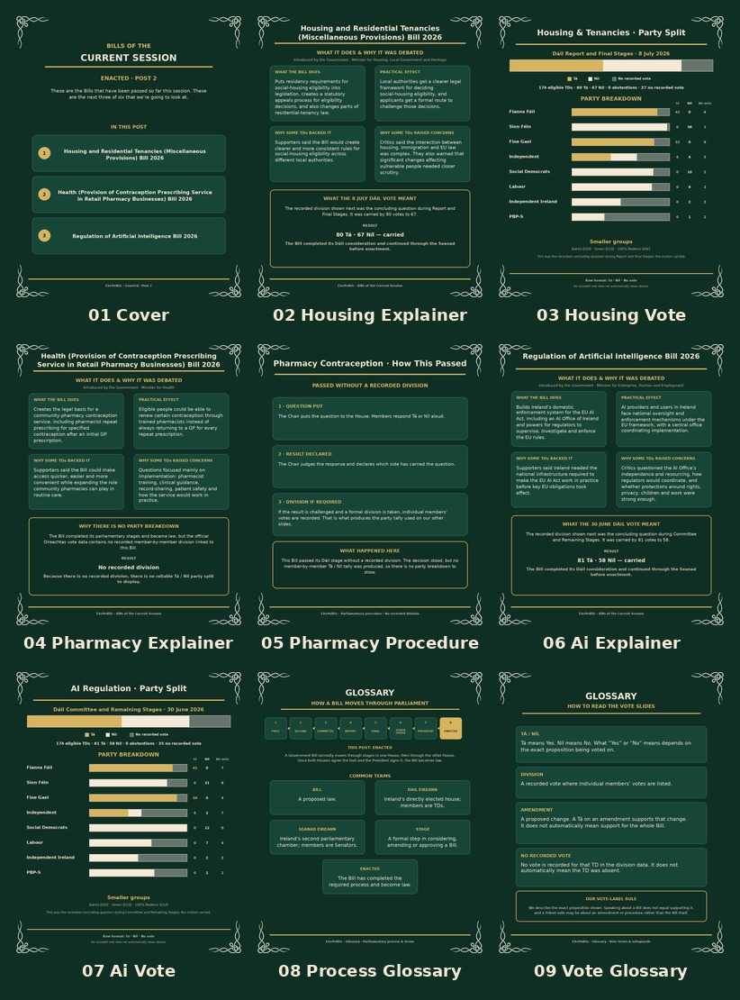

Bill Tracker · Publication Post 2
QA: PASS
Download all slides
Contact sheets

QA checks
| expected_slide_count | PASS | declared 9, actual 9 |
| expected_dimensions | PASS | declared (1080, 1350), contract dimensions (1080, 1350) |
| require_publication_disabled | PASS | publication_enabled=False |
| require_review_state | PASS | declared 'pending_human_review', actual 'pending_human_review' |
| require_source_footer | PASS | adapter declares source_footer_required=True (pixel presence not independently verified by this checker, matching the current bespoke workflow's coverage) |
Slides
Caption
This next series of posts will look at the Bills passed this session, with Bills still in progress to be covered in future posts. This second post covers 3 more Bills that have passed this session: • Housing and Residential Tenancies (Miscellaneous Provisions) Bill 2026 • Health (Provision of Contraception Prescribing Service in Retail Pharmacy Businesses) Bill 2026 • Regulation of Artificial Intelligence Bill 2026 #EirePolitic #Oireachtas #DáilÉireann #IrishPolitics #Legislation